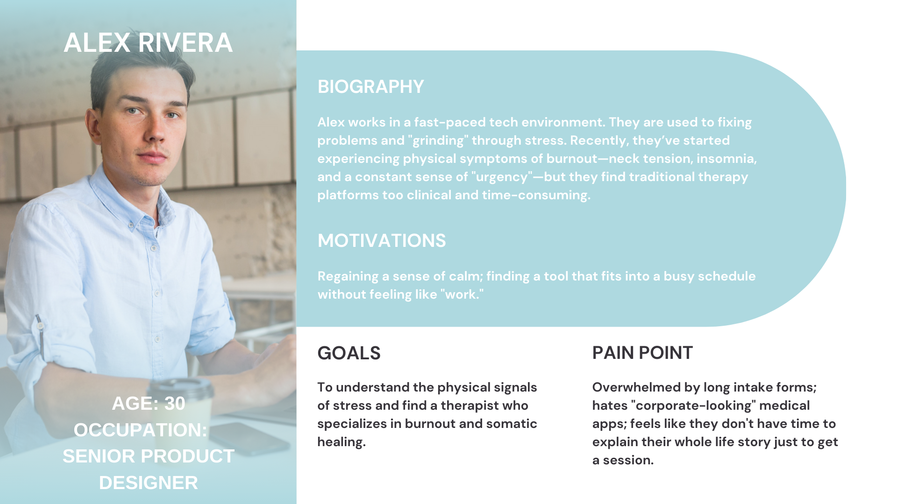
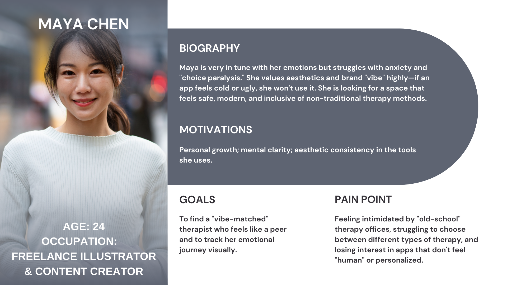
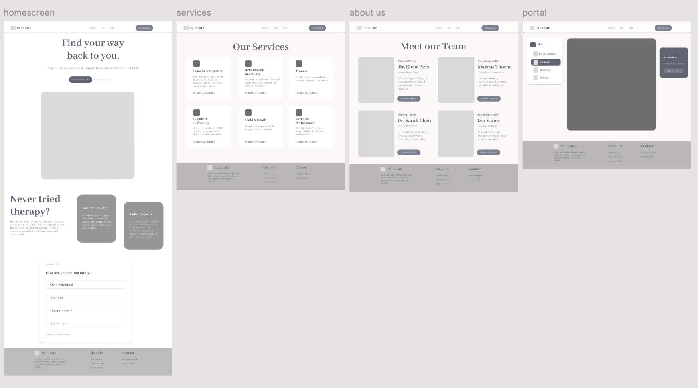

CalmPath Website
CalmPath is a modern mental wellness platform designed specifically for young adults navigating burnout, trauma, and executive stress. The goal was to lower the barrier to entry for therapy through a "conversational-first" interface and somatic-based care.
Objective
CalmPath was to dismantle the clinical coldness of traditional therapy apps by creating a 'gentle-first' digital environment. I aimed to reduce cognitive load during onboarding through conversational UI and somatic tracking, transforming a high-friction medical process into a restorative user journey.
Problems (Key Pain Points)
Choice Paralysis
Users don't know which type of therapy they need.
The "Cold" Start
Filling out long medical intake forms increases anxiety.
Physical-Mental Gap
Many platforms ignore how stress manifests physically in the body.
Research
To better understand travelers’ needs and guide the design of CalmPath, light research and competitive analysis were conducted. The goal was to identify common pain points and opportunities for improvement.
Competitive Analysis
| App Evaluated | Identified Strength | Identified Limitation |
|---|---|---|
| BetterHelp | Massive network of licensed professionals Highly functional and reliable scheduling system Strong brand authority. | The UI feels clinical and "heavy” Lacking an emotional or "soft" start. |
| Headspace | Friendly, approachable vibe. Excellent at building daily habits and reducing the stigma of meditation. | It is largely self-guided and lacks the deep, personalized clinical intervention required for trauma or serious anxiety. |
Target Personas


Wireframes
Created wireframes to map out the user flow. The focus here was on information architecture, ensuring that the journey from the landing page to booking a therapist felt linear and effortless.

Test & Iterate
The prototype was tested with potential users to evaluate usability, clarity, and the emotional resonance of the interface. Feedback was gathered through informal walkthroughs and observations, focusing on how easily users could complete core tasks such as completing the intake quiz, matching with a therapist, and navigating their health dashboard.
Iterations Made:
- Enhanced Messaging Interface: Users wanted to feel a "human connection" before a session. I iterated on the chat UI to include therapist bios and "active" status indicators to make the experience feel real-time and supportive.
- Streamlined Dashboard: I simplified the main overview to focus on the "Next Session" and "Health Overview," removing secondary distractions to keep the user's focus on their immediate well-being.